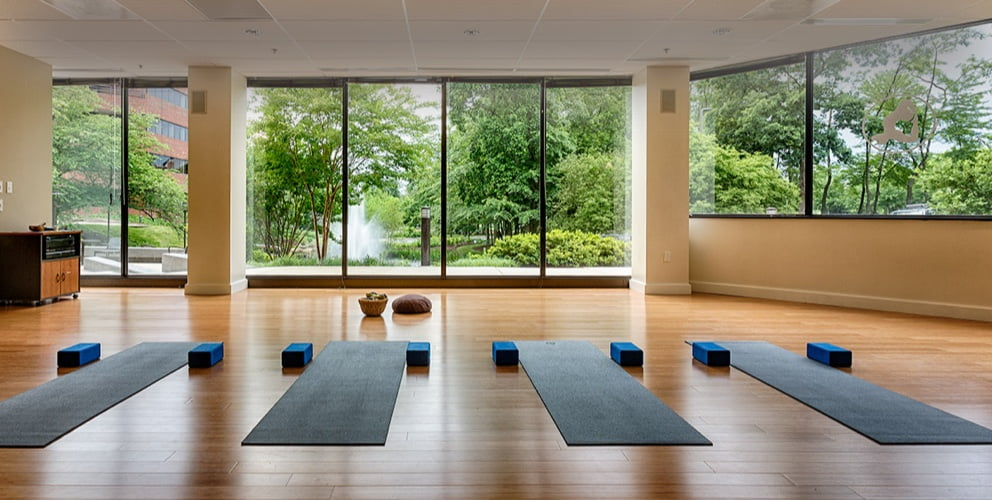

YOUR JOURNEY STARTS HERE
At Lotus we believe body, mind and spirit are like a tripod – even if one aspect isn’t functioning properly, our life will not be balanced and that will lead to ill health. Yoga is that link which creates a harmony by aligning all the three components (body, mind and spirit) into one. This harmony, in turn exists to support life. Yoga is an invitation to explore the body, breath, and mind and to investigate how the heart moves through all three. Everyone can practice yoga, regardless of one’s level of fitness or experience.We offer classes at varying levels as a way of making the practice accessible to a wide range of bodies. Our staff is deeply experienced in the practice of teaching yoga and is dedicated to helping you become your own most valuable teacher.
We offer classes at varying levels as a way of making the practice accessible to a wide range of bodies. Our staff is deeply experienced in the practice of teaching yoga and is dedicated to helping you become your own most valuable teacher.